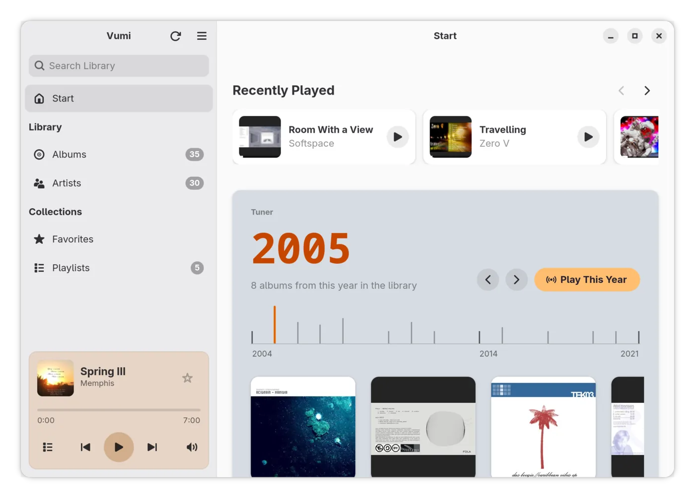
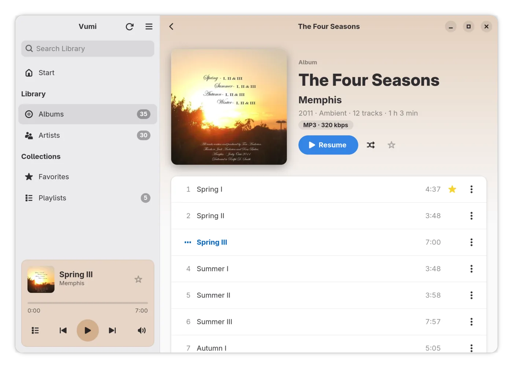
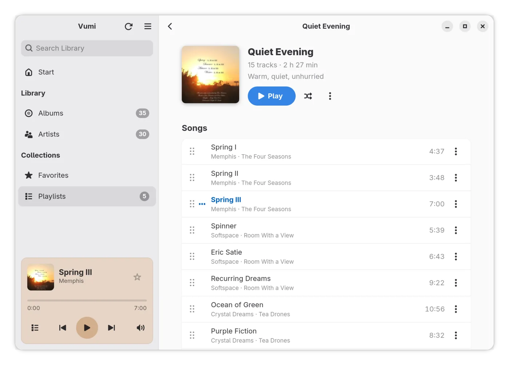
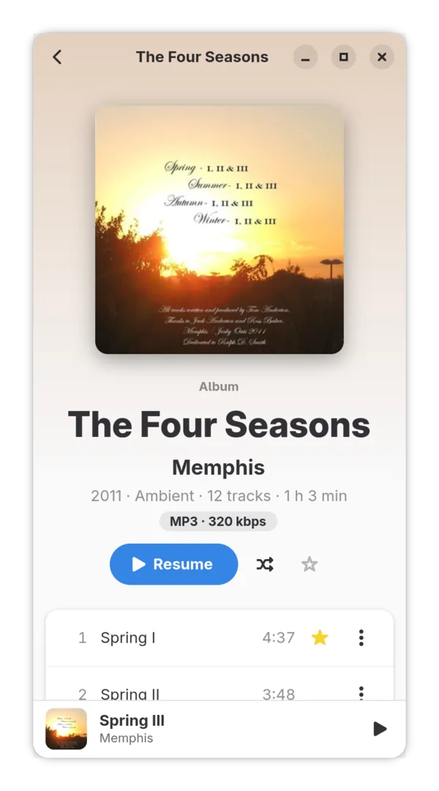
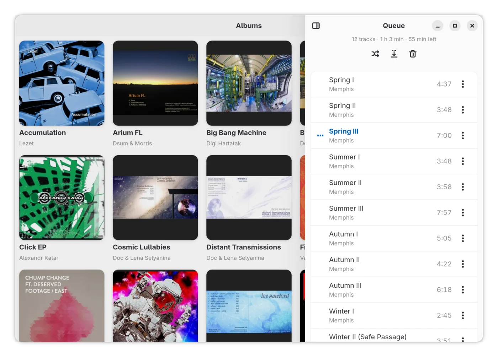
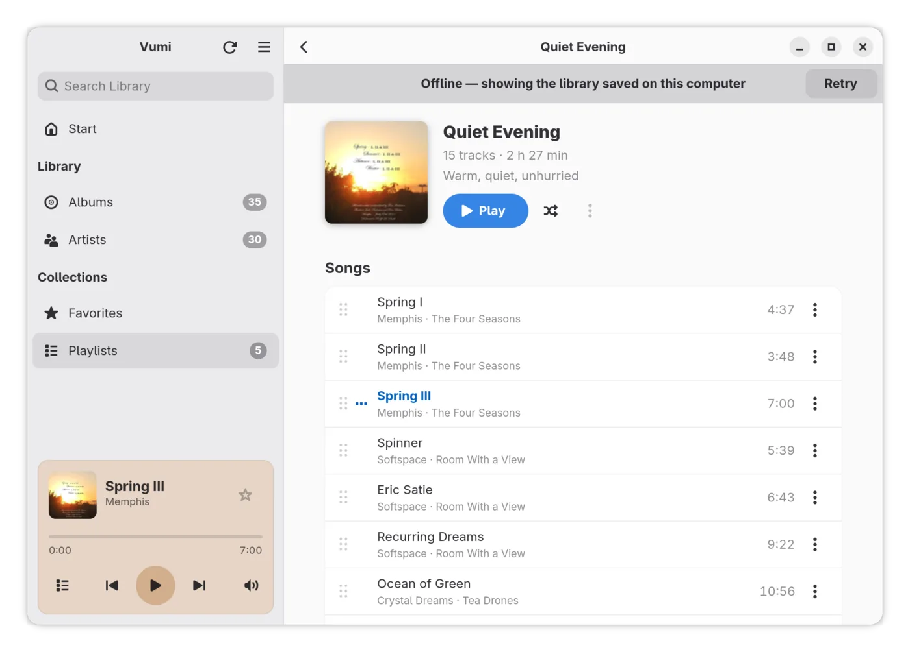
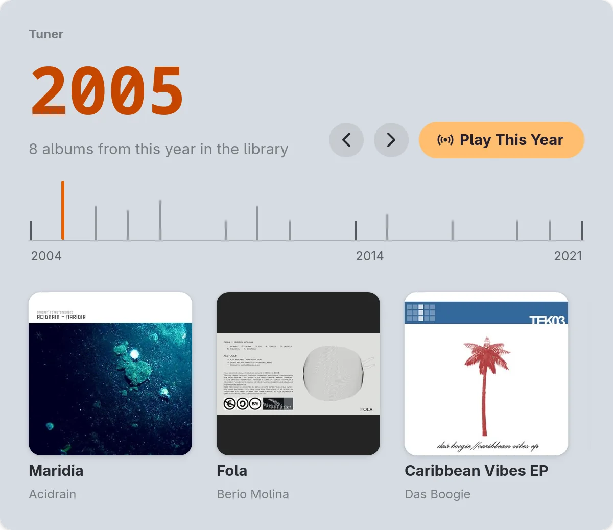

The Tuner
Drag the needle along the years of your library on the Start page, and the albums of that year come up. Play This Year plays a random mix of songs from it.

Speed
A native GTK 4 app written in Rust, with no web browser inside. Measured on a library of 651 albums and 11,333 songs, from a Navidrome server in the local network:
- 0.22 s from start to the library on screen
- 0.53 s from the first login to the albums
- 166 ms to the window's first frame
- 186 ms from a typed phrase to the search results
- 0.45 % of one CPU core while music plays in the background
- 133 MB of memory while idle
Vumi 0.1.3, medians of 5 runs; a PC with an AMD Ryzen 7 9700X, a test compositor at 120 Hz.
What it offers
-
Recently Played
The albums you played lately, each resumed where you stopped.
-
A quick start
The library is kept in a local database, so it is on screen at once. Albums and songs are fetched again only when the server has scanned new music.
-
A native GNOME app
GTK 4 and libadwaita, media controls in GNOME Shell, layouts for narrow and low windows, keyboard shortcuts.
-
AudioMuse-AI, optional
With the AudioMuse-AI plugin on your Navidrome server: similar songs, endless radio and album radio.
- Gapless playback
- ReplayGain
- Scrobbling
- Light and dark style
- English and Polish
Requirements
-
Server
Navidrome, or another server that speaks the Subsonic or OpenSubsonic API. Tested with Navidrome 0.64.
-
System
Linux with Flatpak. The GNOME runtime that Vumi needs comes from Flathub.
Updates arrive with flatpak update or in GNOME Software. Without the repository, download the .flatpak bundle from Releases; a bundle does not update itself.